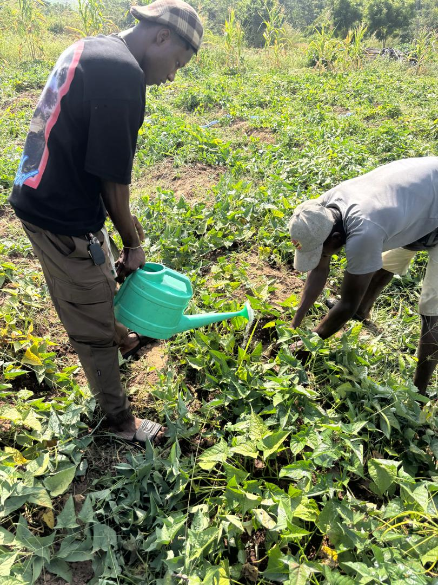
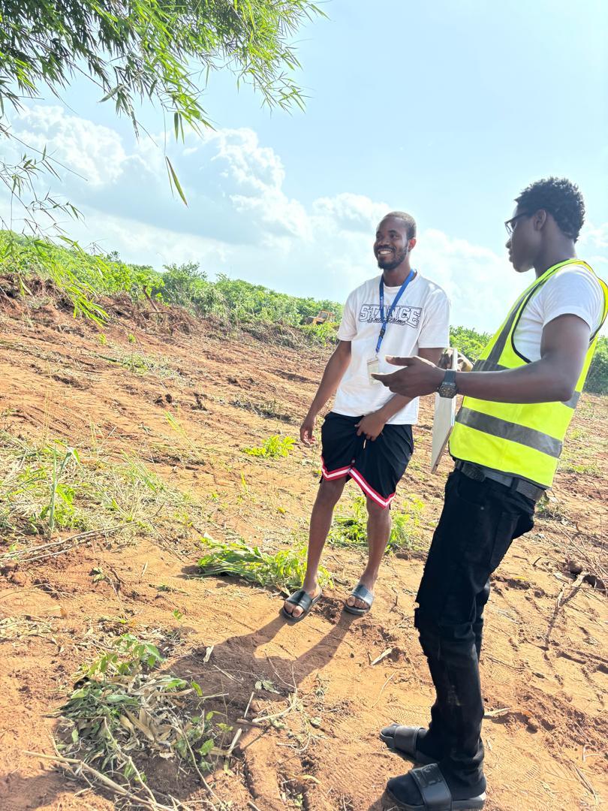

Tell us what you need
Choose a produce category, add your quantity and share your town or collection preference.
Meet the people behind Rethorium Farm. Explore our produce, ask about the harvest, and talk to us about what you need.

Choose a category and tell us the quantity you need. Our team will confirm current availability and prepare your quote.
Items without a published price are quoted by the farm. An enquiry does not reserve stock.
Choose a produce category, add your quantity and share your town or collection preference.
The team checks availability, confirms the price and discusses delivery or collection with you.
Review the full quote and timing with the farm before confirming your order.
WhatsApp enquiries are requests for information. Your order is confirmed only after agreement with the farm.
Share your town or area. We will confirm whether delivery is available, the delivery fee and a suitable date.
Ask the team to confirm the collection location and pickup window before travelling.
Minimum quantities depend on the crop and order size. Request a quote for your requirements.
A closer look at the people, fieldwork and harvests shaping Rethorium Farm. These are photographs from our farm, rather than a guide to today's stock.

Rethorium Farm is a Nigerian agricultural venture bringing together practical fieldwork, crop production and a long-term vision for modern farming.
As part of Rethorium Group, we are developing an approach that connects people, land and agricultural knowledge. Our work centres on responsible resource use, learning from the field and building relationships with the people we serve.
For produce requirements, wholesale enquiries or a conversation about working together, talk directly to our team.
Start a conversationTell us what you need. We will help you work through the details.